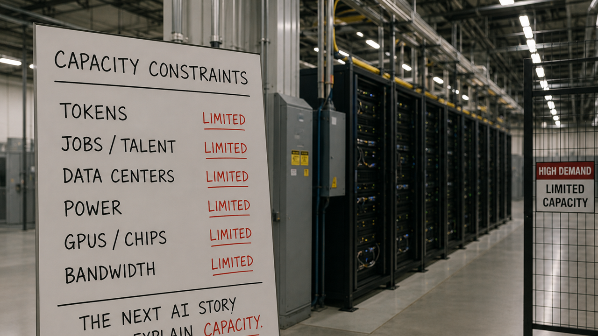

Image captionA dense AI control room packed with power meters, token counters, job charts and data center silhouettes, all funneled through a single golden bottleneck.
The signal
AI is not becoming less important. It is becoming less abstract. The story used to float above ordinary constraints: better model, bigger benchmark, more magical demo. That phase is not over, but it is no longer enough. The new signal is physical and financial. Who has enough compute? Who pays for tokens? Who gets cheaper work? Who loses bargaining power? Who gets the upside when the bill arrives?
That is why this moment feels different. The bottleneck is walking into public view. Meta now explains AI infrastructure as a stack of GPUs, CPUs, custom silicon, networking and data-center work, a sign that infrastructure is not just plumbing but part of the public AI product.1 AWS pricing pages make the same point from the buyer side: the cheap-looking interface sits on metered cloud infrastructure with real unit costs behind it.2
The point is not that AI is too expensive to matter. That would be the lazy conclusion. Expensive technologies can still become ordinary. The first computers filled rooms. Then better chips, better memory, better packaging and better software made computing feel small enough to disappear into everything. AI may follow a version of that path. But between here and there, the constraint is not vibes. It is capacity per watt, useful output per dollar and enough infrastructure to stop the product from becoming a luxury line for companies with the deepest pockets.
Capacity
The hard part is that capacity now means several things at once. It means GPUs and networking. It means energy, cooling, land, water and interconnection queues. It also means human capacity: evaluation, integration, cleanup, review and the boring operational work that turns model output into something trustworthy. A model can be brilliant and still be blocked by data quality, latency, budget, policy, permissions or plain old institutional confusion.
This is where some of the public anxiety is justified. Challenger, Gray & Christmas reported AI as a named reason in recent U.S. job cut announcements, making the labor story harder to wave away as mere atmosphere.3 Anthropic's Economic Index adds a more granular view by tracking how AI is already used across workplace tasks, including computer use, writing, analysis and office support.4 That does not prove a clean one-for-one replacement story. It does say the appeal of AI cannot be sold only as productivity theater. People will ask who gets the productivity.
The infrastructure story has the same problem. Data centers can support useful work, clean-energy demand and new local tax bases. They can also strain grids, reshape land use and put pressure on communities that did not vote to become the backstage area for a global model race. The Guardian has reported on the energy and climate tension around U.S. data-center growth, including places where demand keeps fossil capacity alive or complicates clean-power plans.5 Its reporting on water use shows why simple talking points are not enough: some studies put total data-center water use in a smaller national context, but local stress still matters when the facility lands in a dry or politically sensitive place.6
The July 6 signal sharpened the point. A reported long-term AI-hosting deal involving TeraWulf and Anthropic-tied demand points to roughly 401 megawatts of contracted capacity and a multibillion-dollar value over the lease term.7 That is not a side note. It is the product becoming a power, land, finance and local-infrastructure question in one public frame.
The public test
This is also why the market story should not be waved away as a separate finance problem. If the S&P 500 starts to feel like a concentrated bet on a handful of AI-linked winners, then AI becomes part of household wealth, retirement accounts and political mood. A super-bubble warning can be melodramatic. It can also catch something real: when a technology becomes the explanation for too much market value, disappointment gets social fast.
The better question is not whether AI is overhyped or underhyped. Both can be true in different places. Some valuations can be foolish. Some products can be thin wrappers. Some deployments will fail because nobody did the evaluation work. At the same time, the underlying capability curve is still serious. Coding agents are improving. Medical pattern recognition keeps finding new targets. Robotics is moving from theatrical humanoid demos toward practical bodies. Smaller models, routing and better inference hardware may make useful intelligence cheaper without making it less impressive.
That is the balance. The appeal of AI is not pretending there is no bill. The appeal is that the bill may become worth paying if the output is useful, broad and accountable. Better evaluation matters. Better labels matter. Better datasets matter. Better chips and better cooling matter. So does policy, because a capacity race with no public ledger becomes a trust problem long before it becomes a science-fiction problem.
The Appeal
The bottleneck makes AI less mystical and more governable.
Useful intelligence should become cheaper, denser, cleaner and easier to audit.
The upside gets stronger when the cost is visible enough to argue about in public.
Sources
- Meta Engineering: infrastructure
- AWS EC2 on-demand pricing
- Challenger, Gray & Christmas: job-cut reports
- Anthropic Economic Index
- The Guardian: data centers and clean-energy pressure
- The Guardian: AI data centers and drought-hit land
- MarketWatch: TeraWulf stock soars on Anthropic-tied AI-hosting deal